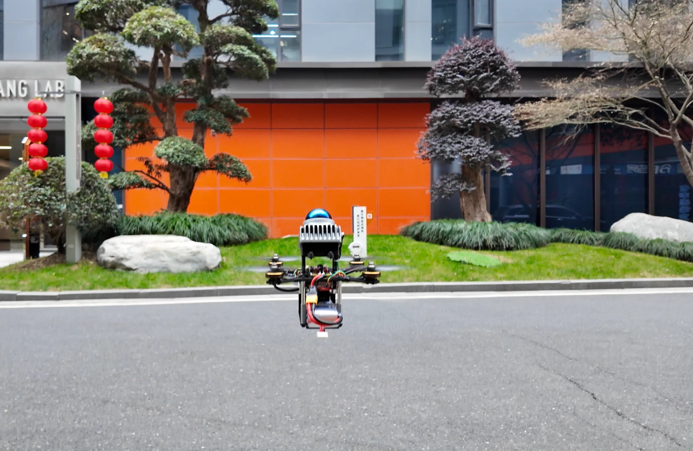
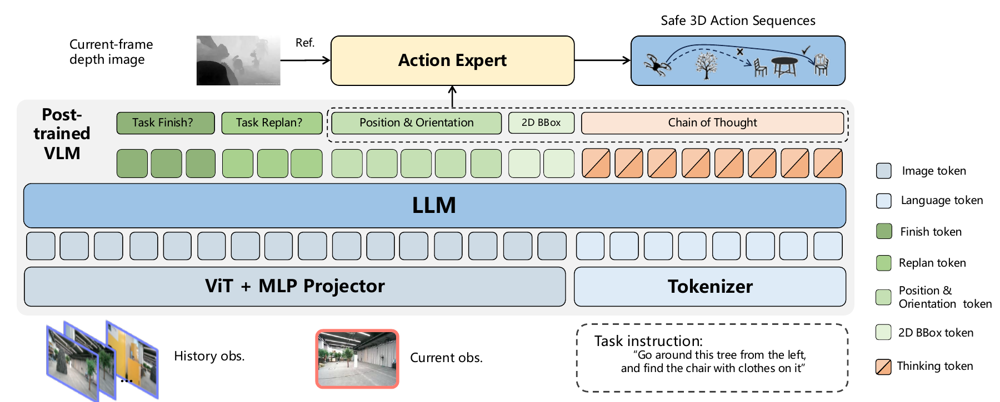
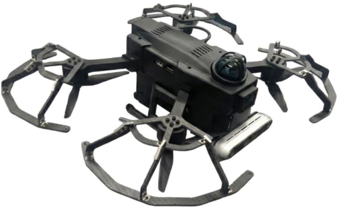

Aerial robotics research
VLN-AR
A Hierarchical Onboard Vision-Language-Navigation Framework for Aerial Robots in Complex Environments
An aerial robot reads a navigation instruction, locates its next goal, and plans a flight path using its onboard cameras and computer.

- Real-world success
- 90.1%
- Onboard decoding speedup
- 7.1–9.4×
- Training data
- ~4M
91 of 101 flight trials
Per token on Jetson Orin NX
Mixed navigation and vision-language samples
Experiments
Flight demonstrations
Follow the aircraft and its first-person view as it executes language instructions in real environments.
Method
From instruction to flight
Learn from reconstructed scenes
3D Gaussian Splatting reconstructs real environments for simulated flights. Two supervised training stages teach grounding and navigation, followed by reinforcement learning in closed-loop simulation.
Choose the next goal
A vision-language model uses the instruction, current view, and recent observations to predict a target pose. A memory module breaks longer requests into subtasks and tracks their progress.
Plan and execute onboard
A lightweight action expert translates each goal into a dynamically feasible trajectory. Instruction-guided token selection reduces the visual computation needed onboard.


Evaluation
Navigation performance
Closed-loop simulation
Success rates on two outdoor benchmarks and the authors’ held-out indoor scenes. VLA-AN is the authors’ earlier framework.
| Evaluation set | VLA-AN | VLN-AR |
|---|---|---|
| AerialVLN | 67.37% | 78.15% |
| OpenFly | 64.67% | 76.88% |
| Indoor simulation | 87.42% | 92.66% |
Onboard flight tests
The NCS and NCS-α aircraft ran perception and navigation on a Jetson Orin NX, completing 91 of 101 real-world trials.

A Hierarchical Onboard Vision-Language-Navigation Framework for Aerial Robots in Complex Environments
1 State Key Laboratory of Industrial Control Technology, Zhejiang University
2 Differential Robotics
* Equal contribution · † Corresponding authors